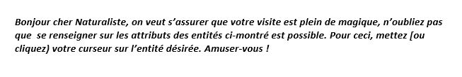
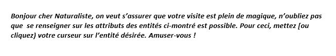
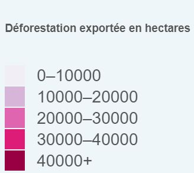

Déscription de la carte
La déforestation exportée est la quantité de déforestation annuelle qui est entraînée par la production de produits alimentaires et forestiers qui sont exportés pour la consommation dans d'autres pays. Ceci est mesuré en hectares.
Durée de variation : 2005-2013
Source : Données publiées par : Pendrill, F., Persson, U. M., Godar, J., et Kastner, T. (2019). Déforestation déplacée: commerce de produits à risque forestier et perspectives d'une transition forestière mondiale. Lettres de recherche environnementale, 14 (5), 055003.
Web-source : https://iopscience.iop.org/article/10.1088/1748-9326/ab0d41
Légende
